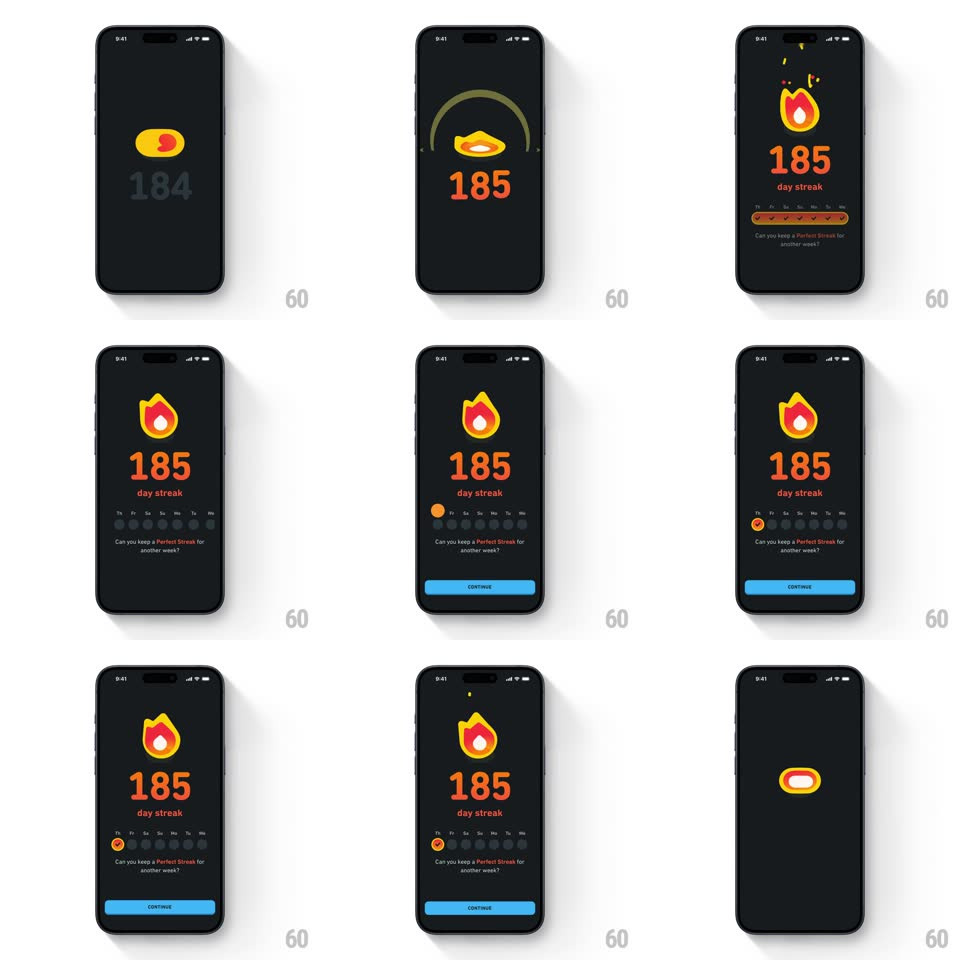

Media
Frame-by-frame

Rebuild this animation 1:1: Duolingo's streak milestone - the flame morphs to full blaze, the counter rolls 184 to 185, and the week calendar fills in with staggered checkmarks above the Continue button.

Rebuild this animation 1:1: Duolingo's streak milestone - the flame morphs to full blaze, the counter rolls 184 to 185, and the week calendar fills in with staggered checkmarks above the Continue button. ## Integration Integration: stack-agnostic spec - springs given as stiffness/damping, timed motions as duration + curve; map every value to your framework and animation library of choice. ## Scene Near-black screen: the streak flame icon (yellow-orange with a white core), the huge orange day count, "day streak" beneath, a one-week calendar row (Th Fr Sa Su Mo Tu We) with check slots, the line "Can you keep a Perfect Streak for another week?", and a blue CONTINUE button. ## Motion spec Pattern: morphing flame with a rolling counter and a staggered calendar reveal. - The flame assembles from a compressed blob: it springs up (scale 0.5 -> 1.1 -> 1, spring ~380/12, ~500ms) and morphs into its full flame silhouette as the white core ignites inside (opacity 0 -> 1, 250ms). - The counter rolls from 184 to 185 (odometer roll, 400ms, ease-out) timed to the flame's peak, landing with a small scale bump (1 -> 1.08 -> 1, 200ms). - "day streak" fades in under the count (200ms). - The week row reveals staggered left to right: each day's slot fades up (50ms apart, 200ms) and the completed days' orange check circles pop (scale 0 -> 1, spring ~450/16, 80ms apart), finishing on today's flame-marked slot. - The Perfect Streak line fades in (250ms), then CONTINUE slides up and fills blue (translateY 16 -> 0, 250ms). - The flame idles with a gentle flicker (scaleY +/-3%, 900ms loop) behind the settled layout. ## Calibration - The roll is the hero beat: flame peak and counter tick land together. - Today's slot carries a mini flame, not a check - the week reads "streak still alive". ## Reduced motion Flame fades in at full size; the count crossfades; calendar days fade without pops. ## Don't miss - The count is huge and orange - the only large type on screen. - Past days are solid orange checks; future days are empty dark slots - the week must read both directions.